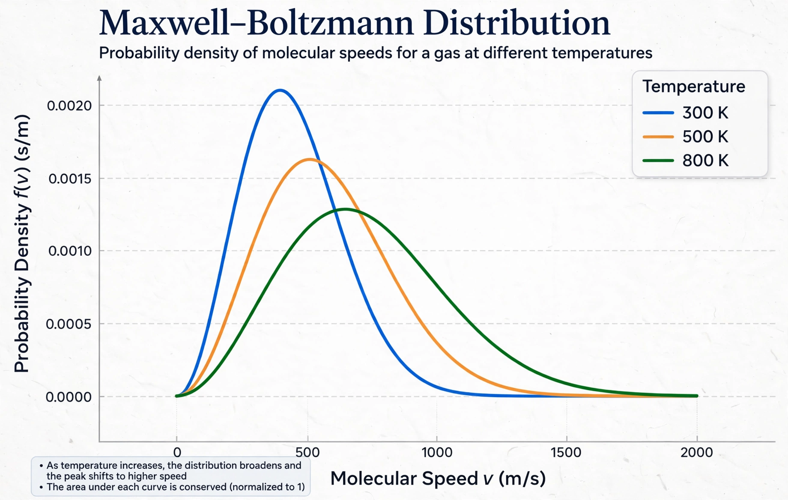

| Boltzmann constant | |
|---|---|
| Symbol | kB or k |
| Value | 1.380649×10−23 J·K−1 (exact) |
| Units | joule per kelvin |
| Named after | Ludwig Boltzmann |
| Introduced by | Max Planck (1900) |

The Boltzmann constant (kB or k) is the proportionality factor that relates the average relative thermal energy of particles in a gas with the thermodynamic temperature of the gas. It occurs in the definitions of the kelvin and the gas constant, and in Planck's law of black-body radiation and Boltzmann's entropy formula, and is used in calculating thermal noise in resistors.
Since the 2019 revision of the SI, the Boltzmann constant has the exact defined value k = 1.380649×10−23 J·K−1. It is dimensionally energy divided by temperature, the same dimension as entropy. The macroscopic gas constant R is simply the Boltzmann constant multiplied by the Avogadro constant: R = NAk.
In statistical mechanics the constant appears in the Boltzmann distribution, which gives the probability that a system occupies a state of energy E as proportional to exp(−E/kT). In Boltzmann's entropy formula, S = k log W, it converts the count of microstates W into thermodynamic entropy; the formula is engraved on Boltzmann's tombstone in Vienna. The equipartition theorem assigns an average energy of ½kT to each quadratic degree of freedom.
Although Ludwig Boltzmann linked entropy and probability in the 1870s, he never introduced the constant explicitly. Max Planck introduced k in 1900 in deriving his law of black-body radiation and named it in Boltzmann's honour. Before 2019 the kelvin was defined via the triple point of water and k was a measured quantity; the redefinition fixed its value exactly and anchored the kelvin to it.
This article was recreated from memory as part of a web-reconstruction exercise.